# A tibble: 24,320 × 5
Quarter Region State Purpose Trips
<date> <chr> <chr> <chr> <dbl>
1 1998-01-01 Adelaide South Australia Business 135.
2 1998-04-01 Adelaide South Australia Business 110.
3 1998-07-01 Adelaide South Australia Business 166.
4 1998-10-01 Adelaide South Australia Business 127.
5 1999-01-01 Adelaide South Australia Business 137.
6 1999-04-01 Adelaide South Australia Business 200.
7 1999-07-01 Adelaide South Australia Business 169.
8 1999-10-01 Adelaide South Australia Business 134.
9 2000-01-01 Adelaide South Australia Business 154.
10 2000-04-01 Adelaide South Australia Business 169.
# ℹ 24,310 more rowsCalendar-based exploratory time series analysis
30th June 2025 @ ISF
Useful links
Exploring temporal data
Time is comparatively simple dimension, it is a continuous and ordered variable.
Why do we need specialised tools?

Representing time
Temporal data structures are often limited.
Most time series datasets look like this:

Representing time
In tsibble time needs the right granularity.
# A tsibble: 24,320 x 5 [1Q]
# Key: Region, State, Purpose [304]
Quarter Region State Purpose Trips
<qtr> <chr> <chr> <chr> <dbl>
1 1998 Q1 Adelaide South Australia Business 135.
2 1998 Q2 Adelaide South Australia Business 110.
3 1998 Q3 Adelaide South Australia Business 166.
4 1998 Q4 Adelaide South Australia Business 127.
5 1999 Q1 Adelaide South Australia Business 137.
6 1999 Q2 Adelaide South Australia Business 200.
7 1999 Q3 Adelaide South Australia Business 169.
8 1999 Q4 Adelaide South Australia Business 134.
9 2000 Q1 Adelaide South Australia Business 154.
10 2000 Q2 Adelaide South Australia Business 169.
# ℹ 24,310 more rowsGranular time vectors in tsibble
yearquarter(), yearmonth(), & yearweek()
Mixed temporal granularities
Existing time vectors are limited
- Gregorian calendar only
- Limited granularity options
- Cannot mix temporal granularities
A better solution?
The {mixtime} package works with…
Many calendars via
{calcal}Gregorian, Chinese, Islamic, Hebrew, …
Custom calendars / granularities
Business hours, trading days, trimesters, …
Mixed temporal granularities in the same tsibble
Critically important for temporal reconciliation!

Mixed temporal granularities
Mixed granularities enable more temporal tasks, e.g. joins, comparisons, & aggregation.
Types of time
Usually we work with continuous time points, however there are many other types of time.
- continuous time [2024 Jan, 2024 Feb]
- cyclical time [Oct, Nov, Dec, Jan]
- origin-less time [Month 3, Month 4]
- ranges [2024 Jan - 2024 Jun]
- durations [3 months]
- progress [60% through month]
Common temporal graphics
These ‘visual idioms’ of time series plots can be categorised into two core groups:
- Linear time plots
- Circular time plots
A grammar of temporal graphics
{ggtime} aims to re-express these time series plots with common elements of a grammar.
Those elements can be further remixed to create other useful temporal visualisations.

Linear time plots
These show time as a continuous dimension.
Circular time plots
Transforms time to reveal circular patterns.
Grammar of temporal graphics
{ggtime} re-expresses these common plots with a composable ggplot2-like grammar.

Data
{mixtime} directly associates time with a calendar to enable plotting:
- Mixed calendars (Gregorian, astronomical, …)
- Mixed granularities (daily, weekly, monthly, …)
- Local/civil time and global/absolute time operations
- e.g.
"2 aweeks"vs"2 weeks"for absolute/civil
- e.g.
- Censored calendars (trading days, working hours, …)
- Origin-less time (time of day, month of year, …)
- and much more…

Geometries / Layers
geom_time_line()A time-aware version of
geom_line(). Shows calendrical jumps with dashed lines and/or open and closed circles.Code
tz_shift <- as_tibble(tsibbledata::gafa_stock) |> filter( (Symbol == "AAPL" & Date <= "2014-01-15") | (Symbol == "GOOG" & Date <= "2014-01-13") ) |> mutate(Date = Sys.Date() + hours(c(1:3, 3:9, 1:2, 4:9)), DST = ifelse(Symbol == "AAPL", "DST Ends", "DST Begins")) |> slice(1:3, 3:12, 12:n()) |> mutate( open = duplicated(Open), closed = c(open[-1], FALSE), Date = Date + open*3600*((DST=="DST Begins")*2-1) ) tz_shift |> ggplot(aes(x = Date, y = Close)) + geom_path(aes(group = cumsum(open))) + geom_path(linetype = "dashed", data = filter(tz_shift, open | closed)) + geom_point(aes(shape = closed), data = filter(tz_shift, open | closed), size = 3) + facet_wrap(vars(DST), ncol = 2, scales = "free_y") + scale_shape_manual(values = c("TRUE" = 16, "FALSE" = 1)) + guides(shape = "none")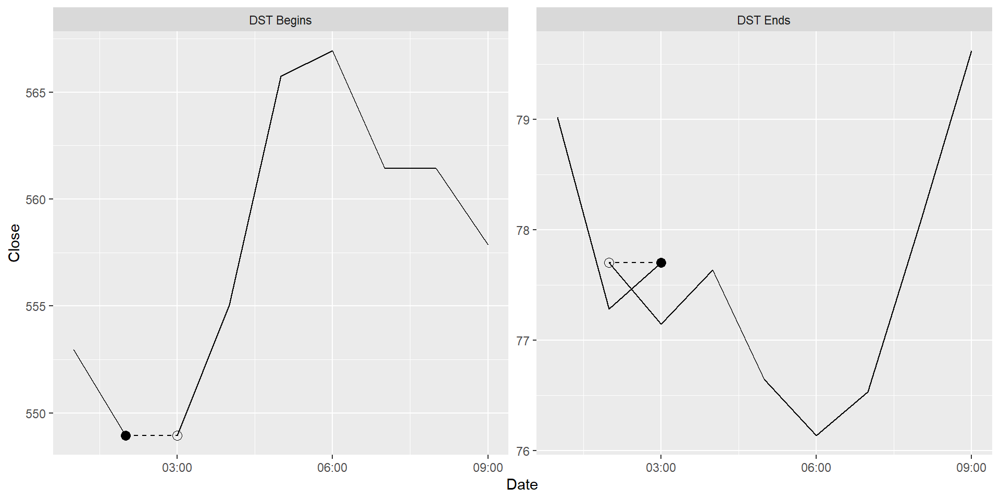
geom_time_candle()Shows calendrical value changes/ranges (e.g. daily, weekly, monthly, annual).
Code
tsibbledata::gafa_stock |>
filter(Symbol == "GOOG") |>
filter(yearmonth(Date) == yearmonth("2014 Jun")) |>
ggplot(aes(x = Date)) +
tidyquant::geom_candlestick(
aes(open = Open, high = High, low = Low, close = Close),
colour_up = "#1FB974", fill_up = "#1FB974", colour_down = "#F4375D", fill_down = "#F4375D"
) +
scale_x_date(date_labels = "%d %b %Y") +
labs(y = "GOOG Stock")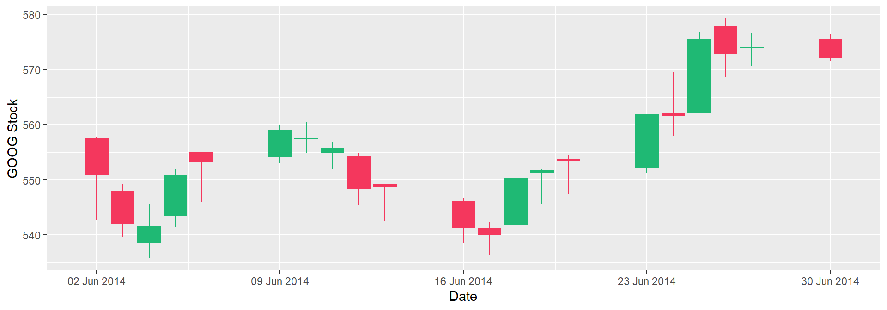
Scales
Much like ggplot2 temporal scales, {ggtime} has a unified scale_*_mixtime() with:
time_labels(strftime-based, e.g."%Y %b")time_breaks(calendar-based, e.g."3 months")
The scales also control calendrical alignment for:
- timezones (
civil_timeboolean) - granularity (
time_align0-1) - cycles (
warpandtime_warp)
Timezone alignment (local/absolute time)
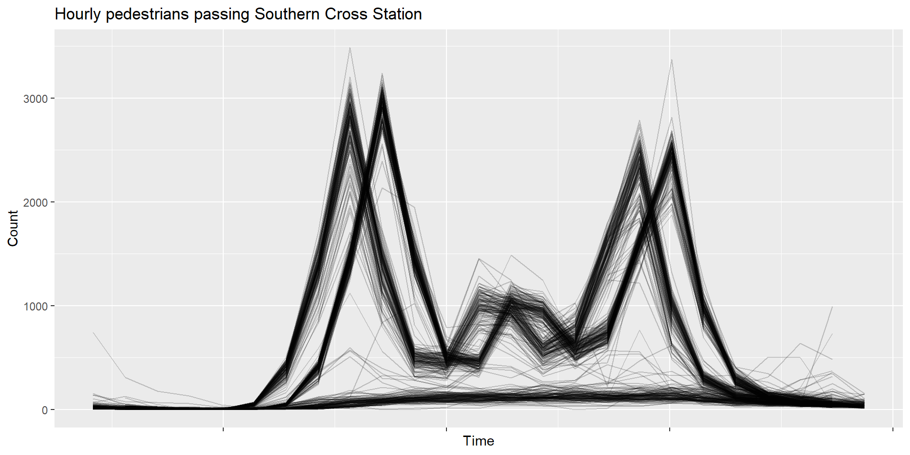
Daylight savings time misaligns daily seasonal patterns.
Timezone alignment (local/absolute time)
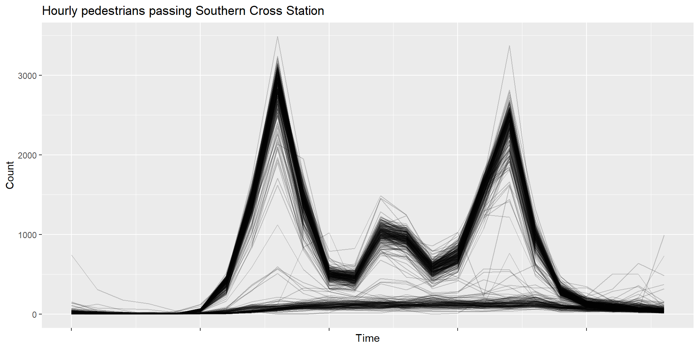
Granularity alignment
{ggtime} aligns mixed granularities.
Imagine Australian births (annual) compared with total births by state (monthly).
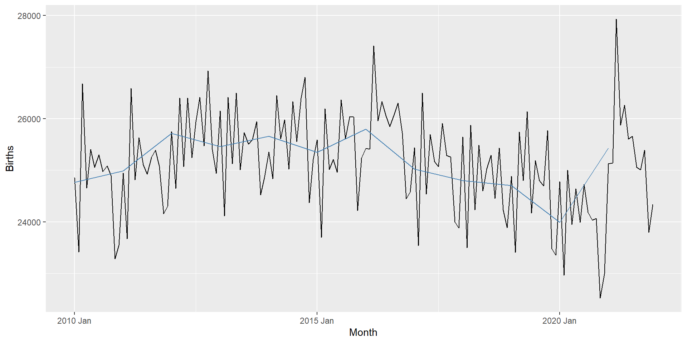
Granularity alignment
{ggtime} center aligns granularities.
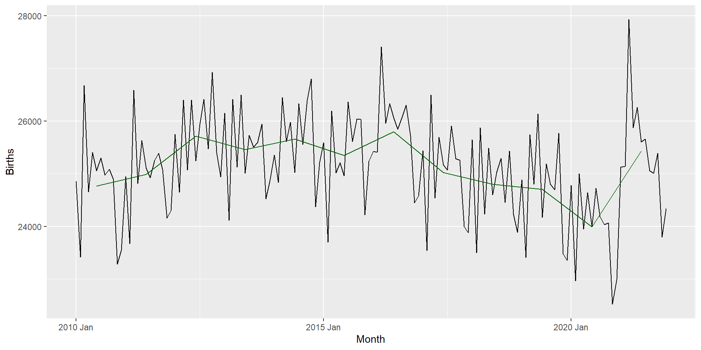
Time warping
{ggtime} defaults to center alignment.
Cycles are repeating patterns with an irregular duration (and shape).
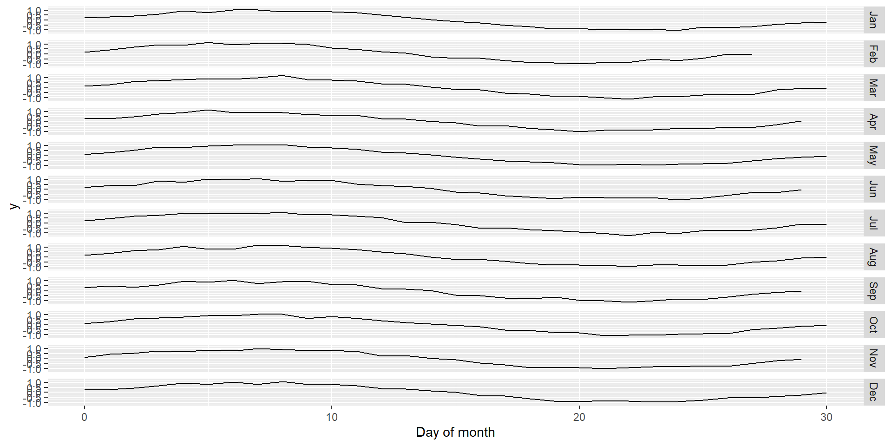
Warping cycles to have the same length as “% of cycle” can help compare cycle shapes.
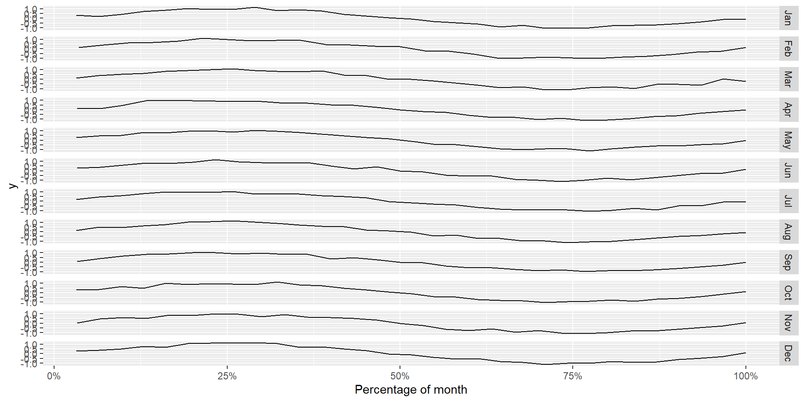
Facets / Coordinates
Two calendar-plot approaches:
facet_calendar()coord_calendar()
Calendar facets
Facets separate each day (or calendar period).
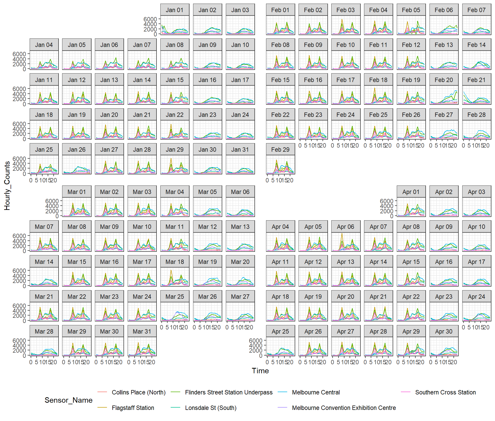
Calendar coordinates
Each day (or calendar period) shares the same panel.
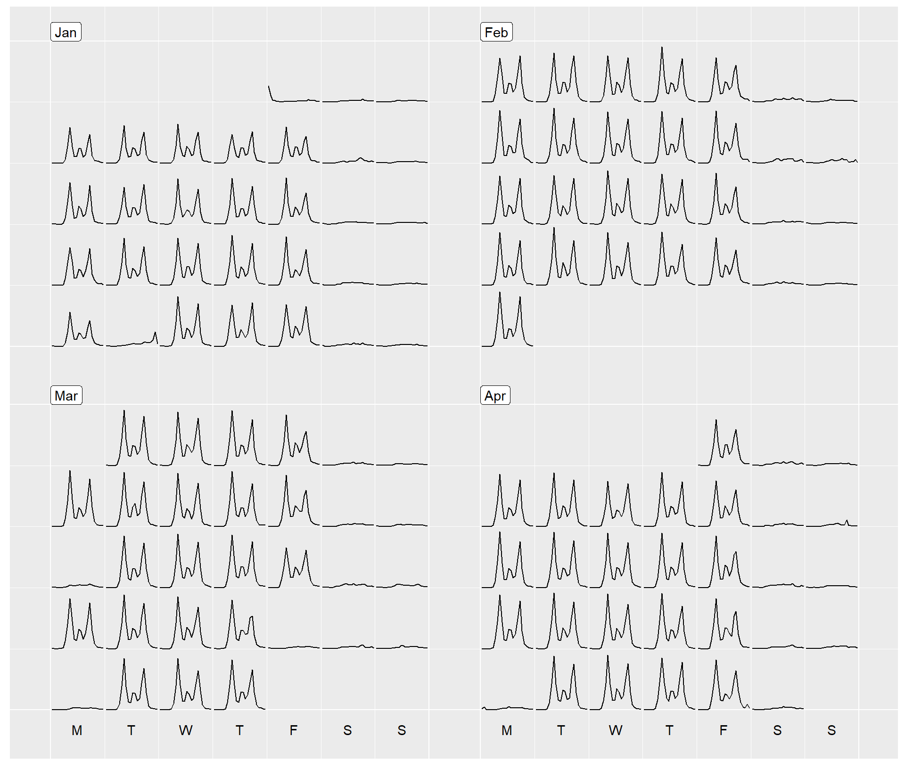
Facets / Coordinates
Season plots loop time over seasonalities.
coord_time_loop()
The time loop points can be specified with:
loops(loop time over specific time points)time_loops(loop time by calendar, e.g."1 week")
Looping circular time periods
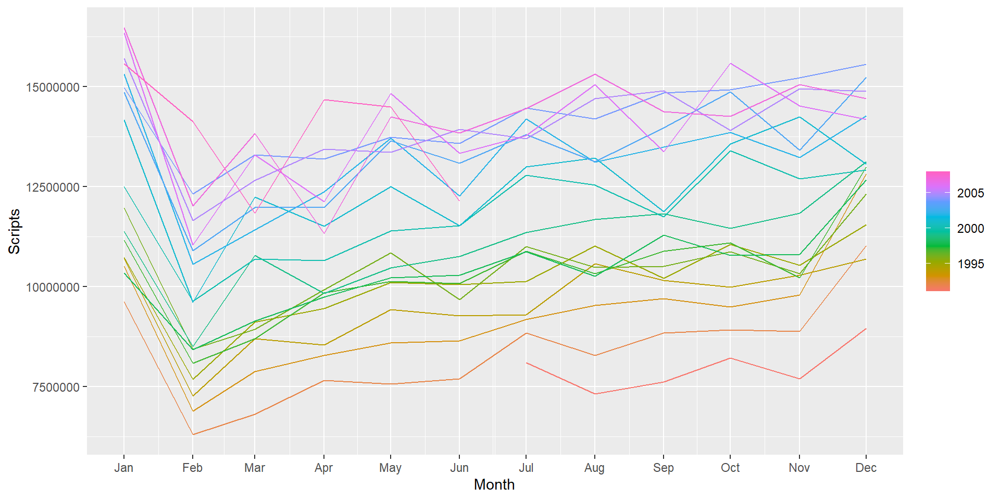
Looping continuous time
Looping the x-axis over seasonal granularities (e.g. day, week, or year) clearly shows seasonality.
coord_time_loop(time_loops = "1 year")
Looping circular time periods
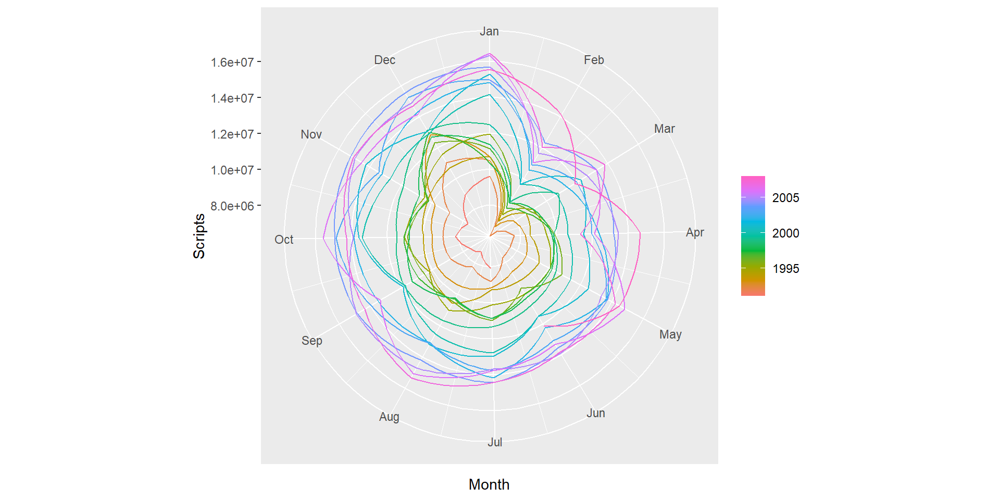
Non-cartesian coordinates
Looping conceptually applies to other coordinate spaces too. Combining coord_loop() and coord_polar() shows seasonality in polar coordinates.
Thanks for your time!
Closing remarks
- Use appropriate granularities for storing time
- Create new graphics by combining each element
- Composable code offer many benefits for exploration
Useful links